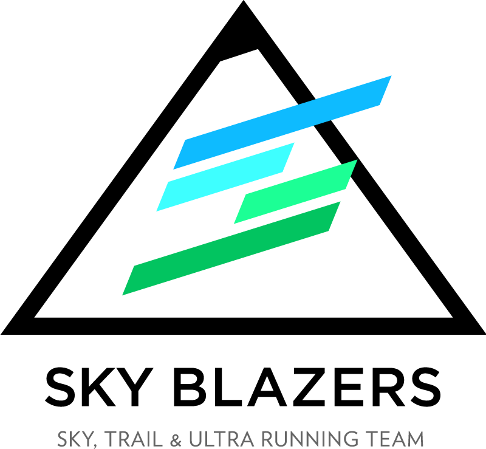

Er det Stirsdag idag?
Hva faen er Stirsdag?
Kort oppsummert er Stirsdag tirsdagstreninga til Sky Blazers hvor alle er velkomne. Vi møtes ved trikkestoppet på Disen, tirsdager kl. 18:00 og løper opp Grefsenkollen og videre inn i marka til Kjelsås. Etterpå tar vi trikken nedover mot løkka hvor vi tar en matbit og en øl. Høres det fett ut, så bli med!
Trenger du litt mer info? Hr. Rummelhoff har forfattet en litt mer utdypende tekst om Stirsdag her.
Værmelding og utstyr
| Plagg/utstyr | God idé? |
|---|
Hvem står bak Stirsdag?
Stirsdag er et initiativ av løpecrewet Sky Blazers. Vi består av ca 10stk kvinner og menn som rett og slett elsker å løpe og konkurrere i røfft terreng. "Sky" kommer av at vi digger skyrunning. "Less cloud, more sky!", som de sier på fagspråket.
Du finner oss i disse kanalene:
- Facebook: @skyblazersrunning
- Instagram: @skyblazersrunning
- Strava: @skyblazers
Vi løpes!
Hilsen Sky Blazers & Co.
